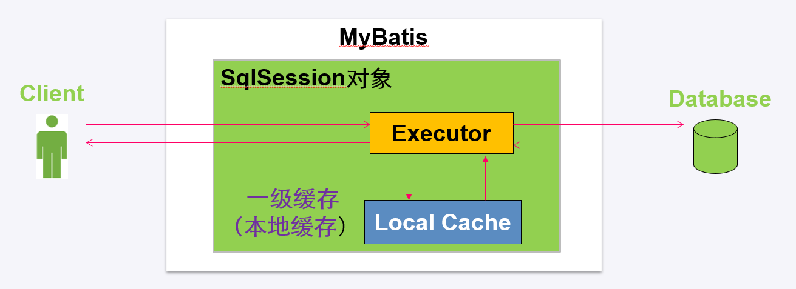
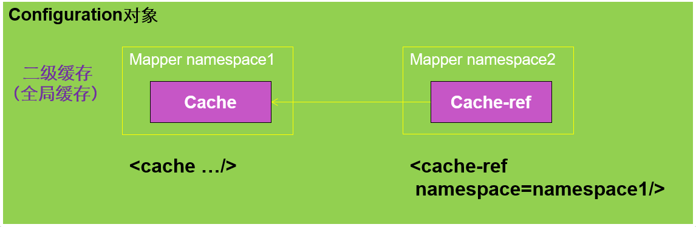
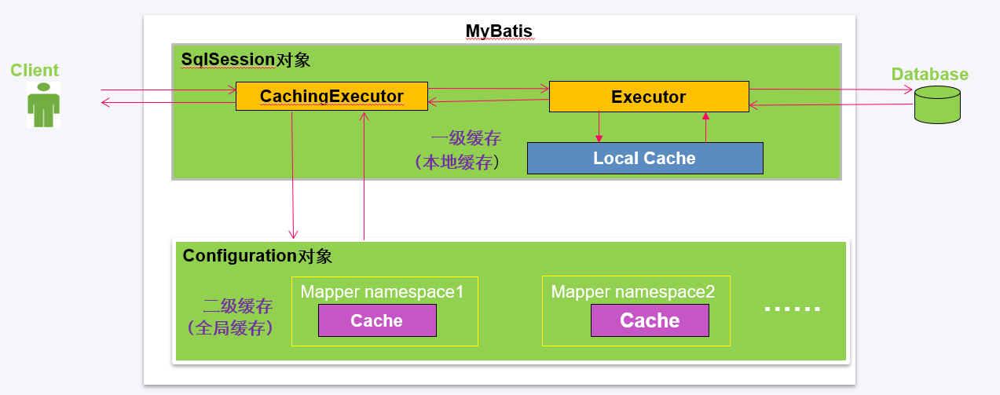

缓存
使用缓存可以使应用更快地获取数据，避免频繁的数据库交互，MyBatis将数据缓存设计成两级结构，分为一级缓存、二级缓存：
- 一级缓存是SqlSession会话级别的缓存，位于表示一次数据库会话的SqlSession对象之中，又被称之为本地缓存。
- 二级缓存是Application级别的缓存，它的作用范围是整个应用程序。
一级缓存
一级缓存是MyBatis内部实现的一个特性，用户不能配置，默认情况下自动支持的缓存
MyBatis会在SqlSession对象中创建一个本地缓存(local cache)。对于每一次查询，都会根据查询的条件去本地缓存中查找是否在缓存中，如果在缓存中，就直接从缓存中取出，然后返回给用户；否则，从数据库读取数据，将查询结果存入缓存并返回给用户。
一级缓存的工作流程：

一级缓存的生命周期
- MyBatis在开启一个数据库会话时，会创建一个新的SqlSession对象；当会话结束时，SqlSession对象也一并释放掉。
- 如果SqlSession调用了close()方法，会释放掉一级缓存，一级缓存将不可用；
- 如果SqlSession调用了clearCache()，会清空缓存，但是该对象仍可使用；
- 在SqlSession中执行了任何一个update操作、insert操作、delete操作，都会清空缓存，但是该对象可以继续使用；
判断两次查询是否相同
MyBatis中，如果以下条件都一样，那么就认为它们是完全相同的两次查询：
- 传入的 statementId
- 查询时要求的结果集中的结果范围
- 这次查询所产生的最终要传递给JDBC java.sql.Preparedstatement的Sql语句字符串
- 传递给java.sql.Statement要设置的参数值
SqlSession的一级缓存性能问题
- MyBatis对会话（Session）级别的一级缓存设计的比较简单，就简单地使用了HashMap来维护，并没有对HashMap的容量和大小进行限制。
- 一级缓存是一个粗粒度的缓存，没有更新缓存和缓存过期的概念
根据一级缓存的特性，在使用的过程中，应该注意以下两点
- 对于数据变化频率很大，并且要求高时效准确性的数据，我们使用SqlSession查询的时候，可以手动地适时清空SqlSession中的缓存
- 对于只执行或者频繁执行大范围的select操作的SqlSession对象，SqlSession对象的生存时间不应过长。
示例代码
1 | public class Test { |
二级缓存
开启二级缓存
MyBatis的二级缓存默认为开启状态，在主配置文件中，settings配置中有一个参数cacheEnable，当把该参数的值设置为false时，可关闭二级缓存
1 | <settings> |
配置方式
MyBatis的二级缓存是和命名空间绑定的，即二级缓存需要配置在映射文件中，有两种配置方式
- 为每一个Mapper分配一个Cache缓存对象（使用<cache>元素配置）
- 多个Mapper共用一个Cache缓存对象（使用<cache-ref>元素配置）；
1、保证二级缓存的全局配置开启，并且使用二级缓存的实体类要实现Serializable接口
2、给UserMapper.xml开启二级缓存，在mapper元素中
1 | <mapper namespace="com.mybatis.mapper.UserMapper"> |
默认的二级缓存效果如下:
- 映射语句文件中的所有 select 语句将会被缓存
- 映射语句文件中的所有 insert，update和delete语句会刷新缓存
- 缓存会使用 Least Recently Used（LRU，最近最少使用的）算法来收回
- 根据时间表（比如 no Flush Interval，没有刷新间隔）, 缓存不会以任何时间顺序来刷新
- 缓存会存储集合或对象（无论查询方法返回什么类型）的 1024 个引用
- 缓存会被视为是 read/write（可读/可写）的缓存，意味着对象检索不是共享的，而且可以安全地被调用者修改，而不干扰其他调用者或线程所做的潜在修改
刷新和置换策略
MyBatis主要提供了以下几个刷新和置换策略：
- LRU（Least Recently Used）：最近最少使用算法，移除最长时间不被使用的对象，这是默认值
- FIFO（First in first out）：先进先出算法，移除最先进入缓存中的对象
- flushInterval：刷新间隔，会以指定的某一个时间间隔将缓存中的数据清空，不设置时仅仅在调用语句时刷新
- size：可以缓存的对象数目，默认值为1024
- readOnly：只读属性，只读的缓存会给调用者返回缓存对象的相同实例，因此这些对象不能被修改；可读写的缓存会返回缓存对象的拷贝，这种方式更安全，因此默认值是false
以上效果都可以通过cache元素的属性来修改
1 | <cache |
这个配置创建了一个 FIFO 缓存，并每隔 60 秒刷新，存储结果对象的 512 个引用，而且返回的对象被认为是只读的，因此在不同线程中的调用者之间修改它们会导致冲突
多个Mapper公用一个Cache缓存
如果想让多个Mapper公用一个Cache缓存，可以使用<cache-ref namespace=””>元素配置参照缓存，这样不仅能减少配置项，还能解决脏读问题

MyBatis中开启二级缓存之后，一级缓存和二级缓存的使用顺序为：
二级缓存->一级缓存->数据库

集成EhCache缓存
MyBatis对二级缓存的设计非常灵活，在MyBatis中使用二级缓存有三个选择
- 它自己内部基于HashMap实现了一系列的Cache缓存实现类，并提供了各种缓存刷新策略如LRU，FIFO等
- MyBatis还允许用户自定义Cache接口实现，然后将Cache实现类配置在<cache type=””>type属性上即可
- MyBatis还支持第三方缓存框架（EhCache、Redis）的集成
EhCache是一个纯粹的Java进程内的缓存框架，主要特征
- 快速、简单
- 提供多种缓存策略
- 缓存数据有内存和磁盘两种
MyBatis集成EhCache框架jar包下载地址为：https://github.com/mybatis/ehcache-cache/releases
MyBatis集成EhCache框架的步骤为：
- 添加jar包，并添加到项目的Build Path
- 在resources目录下添加ehcache.xml配置文件
- 修改映射接口中的缓存配置
1 | <mapper namespace="com.mybatis.mapper.UserMapper"> |
EhCache提供了2个可选的缓存实现
- org.mybatis.caches.ehcache.EhcacheCache
- org.mybatis.caches.ehcache.LoggingEhcache
ehcache.xml配置文件
1 | <ehcache xmlns:xsi="http://www.w3.org/2001/XMLSchema-instance" xsi:noNamespaceSchemaLocation="../config/ehcache.xsd"> |
脏数据的产生和避免
二级缓存中脏数据产生的原因
- 通常情况下每个Mapper映射文件都有自己的二级缓存
- 有些查询需要关联多张表
- 涉及这多张表的增删改查操作通常不在一个映射文件中
- 当数据有变化时，多表查询的缓存不一定会清空，这种情况下就会出现脏数据
1 | SqlSession sqlSession1 = MyBatisUtil.openSqlSession(); |
可以使用参照缓存来避免脏数据的产生，通常是让几个会关联的ER表使用同一个二级缓存
1 | <cache-ref namespace="net.onest.mapper.UserMapper"/> |